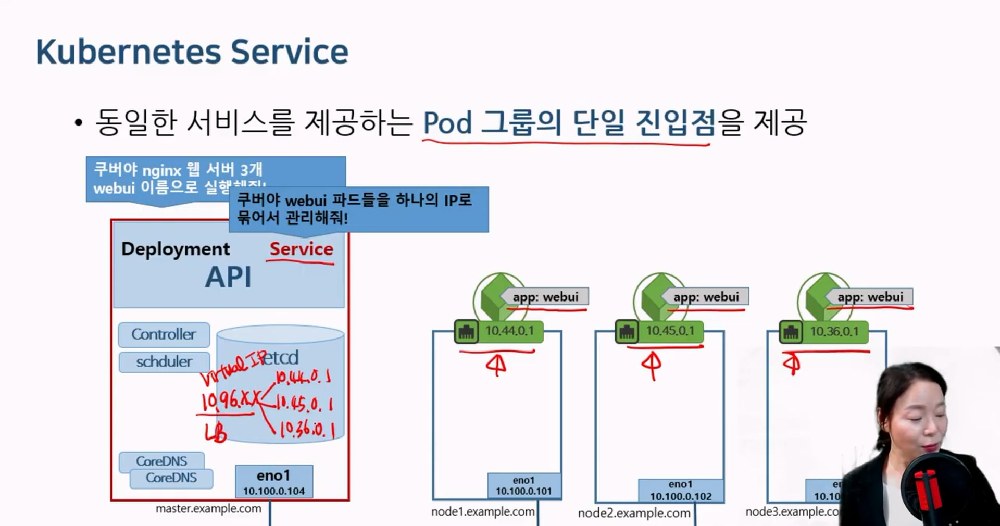

서비스
Service
- 서비스 = 쿠버네티스 네트워크
nginx 웹서버 3개 실행 해서, pod3개가 생겼는데
실제 작업을 수행할때 누가 수행할 것인가?
작업 분산이 필요할때 서비스를 요청한다.
Kubernetes Service 출처 : 유튜브 따배런 따배쿠 https://www.youtube.com/@ttabae-learn
{kind=link}
- 4가지 Type 지원
- ClusterIP : Pod 그룹의 단일 진입점(Virtual IP) 생성 10.96.x.x
- NodePort : ClusterIP가 생성된 후 모든 Worker Node에 외부에서 접속가능 한 포트가 예약
- LoadBalancer : 클라우드 인프라스트럭쳐(AWS, Azure 등)나 오픈스택 클라우드에만 적용가능, LB를 자동으로 프로비전하는 기능 지원
- ExternalName : 클러스터안에서 외부에 접속시 사용할 도메인을 등록해서 사용. 클러스터 도메인이 실제 외부 도메인으로 치환되어 동작
ClusterIP
selector의 label이 동일한 파드들의 그룹으로 묶어, 단일 진입점 (Virtual_IP)을 생성.
클러스터 내부에서만 사용가능.
type생략 시 default 값으로 10.96.0.0/12 범위에서 할당됨
(255.240.0.0)

#기본 webui pod 3개 띄우는 디플로이 컨트롤러를 띄우고
cat deploy-nginx.yaml
apiVersion: apps/v1
kind: Deployment
metadata:
name: webui
spec:
replicas: 3
selector:
matchLabels:
app: webui
template:
metadata:
name: nginx-pod
labels:
app: webui
spec:
containers:
- name: nginx-container
image: nginx:1.14
kubectl create -f deploy-nginx.yaml
kubectl get pods -o wide
NAME READY STATUS RESTARTS AGE IP NODE NOMINATED NODE READINESS GATES
webui-5cfbcf5f65-7qhzd 1/1 Running 0 3m42s 10.44.0.1 node1.example.com <none> <none>
webui-5cfbcf5f65-kqx74 1/1 Running 0 3m42s 10.44.0.2 node1.example.com <none> <none>
webui-5cfbcf5f65-q7nwn 1/1 Running 0 3m42s 10.36.0.1 node2.example.com <none> <none># 서비스 실행
cat clusterip-nginx.yaml
apiVersion: v1
kind: Service
metadata:
name: clusterip-service
spec:
type: ClusterIP
clusterIP: 10.100.100.100 #<-- 생략하면 랜덤ip가 됨. None이라고 하면 Headless 서비스가 됨
selector:
app: webui
ports:
- protocol: TCP
port: 80
targetPort: 80
kubectl create -f clusterip-nginx.yaml
kubectl get service
NAME TYPE CLUSTER-IP EXTERNAL-IP PORT(S) AGE
clusterip-service ClusterIP 10.100.100.100 <none> 80/TCP 10s
kubernetes ClusterIP 10.96.0.1 <none> 443/TCP 7d10h
kubectl describe svc clusterip-service
Name: clusterip-service
Namespace: default
Labels: <none>
Annotations: <none>
Selector: app=webui
Type: ClusterIP
IP Family Policy: SingleStack
IP Families: IPv4
IP: 10.100.100.100
IPs: 10.100.100.100
Port: <unset> 80/TCP
TargetPort: 80/TCP
Endpoints: 10.36.0.1:80,10.44.0.1:80,10.44.0.2:80 #<-- endpoint가 3개 pod의 ip로 분산되어 있는것을 볼 수 있다
Session Affinity: None
Events: <none>
#pod 3개중 어디로 연결된 지를 모르지만 결과가 잘 나오는 것을 볼 수 있고
# 각 pod에 접속해서 index.html을 바꿔놓으면 확실히 확인 될 것이다.
curl 10.100.100.100
kubectl delete service clusterip-service🔎 expose CLI 명령어
kubectl expose deployment webui \
--name=clusterip-service \
--type=ClusterIP \
--port=80 --target-port=80NodePort
NodePort는 외부에서 노드 IP의 특정 포트(<NodeIP>:<NodePort>)로 들어오는 요청을 감지하여, 해당 포트와 연결된 파드로 트래픽을 전달하는 유형의 서비스다.
이때 클러스터 내부로 들어온 트래픽을 특정 파드로 연결하기 위한 ClusterIP 역시 자동으로 생성된다

# 위의 기본 webui pod 3개 띄우는 deployment가 배포되어 있는 상태에서
# 서비스 실행
cat nodeport-nginx.yaml
apiVersion: v1
kind: Service
metadata:
name: nodeport-service
spec:
type: NodePort
clusterIP: 10.100.100.200 #<--- 생략하면 랜덤ip가 됨
selector:
app: webui
ports:
- protocol: TCP
port: 80
targetPort: 80
nodePort: 30200 #<-- 생략가능. 생략하면 랜덤포트 30000~32767 에서 정해짐
kubectl create -f nodeport-nginx.yaml
kubectl get svc
NAME TYPE CLUSTER-IP EXTERNAL-IP PORT(S) AGE
kubernetes ClusterIP 10.96.0.1 <none> 443/TCP 7d10h
nodeport-service NodePort 10.100.100.200 <none> 80:30200/TCP 15s
#결과를 볼 수 있다.
curl 10.100.0.101:30200
curl 10.100.0.102:30200
LoadBalancer
AWS, Azure, GCP 등에서 운영가능하며, 자동으로 구성요청.
NodePort를 예약 후 해당 nodeport로 외부 접근을 허용
외부 로드밸런서 장비로 세팅이 되게되며, 구성된 IP로 접근하면 각 NodePort로 분산 접근하는 효과
cat loadbalancer-nginx.yaml
apiVersion: v1
kind: Service
metadata:
name: loadbalancer-service
spec:
type: LoadBalancer
selector:
app: webui
ports:
- protocol: TCP
port: 80
targetPort: 80
ExternalName
도메인 네임 서비스
#기본 webui pod 3개 띄우는 deployment가 배포된 상태에서
# 서비스 생성
cat external-name.yaml
apiVersion: v1
kind: Service
metadata:
name: externalname-svc
spec:
type: ExternalName
externalName: google.com
kubectl create -f external-name.yaml
kubectl get svc
NAME TYPE CLUSTER-IP EXTERNAL-IP PORT(S) AGE
externalname-svc ExternalName <none> google.com <none> 7s
kubernetes ClusterIP 10.96.0.1 <none> 443/TCP 9m30s
#pod를 내부로 진입해서 실행한 뒤
kubectl run testpod -it --image=centos:7 -- /bin/bash
root ~$> curl {서비스이름:externalname-svc}.{네임스페이스:default}.svc.cluster.local
헤드리스 서비스
ClusterIP가 없는 서비스로 단일 진입점이 필요없을 때 사용
Pod의 endpoint ip에 대응하는 DNS레코드로 제공됨
Pod의 DNS 주소 : {pod-ip-addr}.{namespace}.pod.cluster.local
#기본 webui pod 3개 띄우는 deployment가 배포된 상태에서
#서비스 생성
kubectl create -f clusterip-nginx.yaml
kubectl get svc
NAME TYPE CLUSTER-IP EXTERNAL-IP PORT(S) AGE
clusterip-service ClusterIP 10.100.100.100 <none> 80/TCP 8s
kubernetes ClusterIP 10.96.0.1 <none> 443/TCP 10h
#헤드리스 서비스 생성
cat headless-nginx.yaml
apiVersion: v1
kind: Service
metadata:
name: headless-service
spec:
type: ClusterIP
clusterIP: None #<---- Cluster IP에 None 처리. 생략이 아님
selector:
app: webui
ports:
- protocol: TCP
port: 80
targetPort: 80
kubectl create -f headless-nginx.yaml
kubectl get svc
NAME TYPE CLUSTER-IP EXTERNAL-IP PORT(S) AGE
clusterip-service ClusterIP 10.100.100.100 <none> 80/TCP 109s
headless-service ClusterIP None <none> 80/TCP 8s
kubernetes ClusterIP 10.96.0.1 <none> 443/TCP 10h#상세조회
kubectl describe svc headless-service
Name: headless-service
Namespace: default
Labels: <none>
Annotations: <none>
Selector: app=webui
Type: ClusterIP
IP Family Policy: SingleStack
IP Families: IPv4
IP: None #<--- IP는 없다
IPs: None
Port: <unset> 80/TCP
TargetPort: 80/TCP
Endpoints: 10.36.0.1:80,10.44.0.1:80,10.44.0.2:80 #<--- pod 3개 묶여있다
Session Affinity: None
Events: <none>
#테스트를 위해 testpod를 만들고, 바로 내부 접속까지
kubectl run testpod -it --image=centos:7 -- /bin/bash
[root@testpod /]# cat /etc/resolv.conf #<---- 코어DNS의 IP가 무엇인지 확인하기 위해서
search default.svc.cluster.local svc.cluster.local cluster.local
nameserver 10.96.0.10
options ndots:5
[root@testpod /]# curl 10-36-0-1.default.pod.cluster.local #<--- {pod-ip-addr}.{namespace}.pod.cluster.local 매핑kube-proxy
Kubernetes Service의 backend를 구현
endpoint 연결을 위한 iptables를 구성
NodePort로의 접근과 Pod 연결을 구현(iptables 구성)
#node1 접속상태에서
#조회해보면, 각 pod의 ip들이 이미 iptables에 들어간 것을 볼 수 있다
root@node1:~# iptables -t nat -S | grep 80
-A KUBE-MARK-DROP -j MARK --set-xmark 0x8000/0x8000
-A KUBE-SEP-HRLSFD7UJD73STE6 -p tcp -m comment --comment "default/clusterip-service" -m tcp -j DNAT --to-destination 10.44.0.1:80
-A KUBE-SEP-KJJCEWDGN43ZNMPN -p tcp -m comment --comment "default/clusterip-service" -m tcp -j DNAT --to-destination 10.44.0.2:80
-A KUBE-SEP-KPNE4OMUFKEDG6YL -p tcp -m comment --comment "default/clusterip-service" -m tcp -j DNAT --to-destination 10.36.0.1:80
-A KUBE-SERVICES -d 10.100.100.100/32 -p tcp -m comment --comment "default/clusterip-service cluster IP" -m tcp --dport 80 -j KUBE-SVC-KUSV3H3OUX7H3MDQ
-A KUBE-SVC-KUSV3H3OUX7H3MDQ -m comment --comment "default/clusterip-service -> 10.36.0.1:80" -m statistic --mode random --probability 0.33333333349 -j KUBE-SEP-KPNE4OMUFKEDG6YL
-A KUBE-SVC-KUSV3H3OUX7H3MDQ -m comment --comment "default/clusterip-service -> 10.44.0.1:80" -m statistic --mode random --probability 0.50000000000 -j KUBE-SEP-HRLSFD7UJD73STE6
-A KUBE-SVC-KUSV3H3OUX7H3MDQ -m comment --comment "default/clusterip-service -> 10.44.0.2:80" -j KUBE-SEP-KJJCEWDGN43ZNMPN